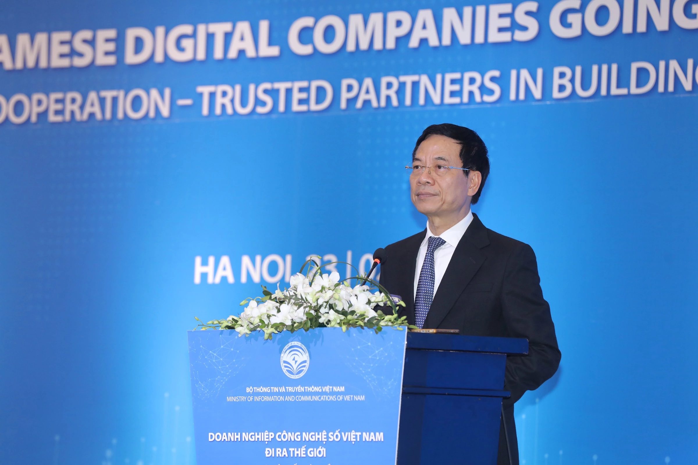

Hành trình công nghệ Việt vươn tầm toàn cầu
"Đi ra nước ngoài là mang tri thức, công nghệ số của Việt Nam đi mở cõi. Để thế giới biết đến Việt Nam không chỉ vì Việt Nam là nơi đến mà còn là do nơi Việt Nam đến. Đi ra nước ngoài là để Việt Nam đóng góp cho sự phát triển của nhân loại", Bộ trưởng Nguyễn Mạnh Hùng nói trước đại diện hơn 100 doanh nghiệp công nghệ số Việt Nam đang trên đường ra thế giới cách đây hai năm.
Khi đó, doanh thu thị trường quốc tế của Việt Nam là 7,5 tỷ USD. Các doanh nghiệp công nghệ số Việt nâng con số này lên 11,5 tỷ USD vào năm 2024.
Trải qua 80 năm, từ vị thế đi sau về công nghệ, Việt Nam dần khẳng định mình trên bản đồ công nghệ thế giới. Trong hai thập kỷ kể từ những bước đi đầu tiên của FPT với xuất khẩu phần mềm năm 1999, hay Viettel khai mở thị trường viễn thông quốc tế, Việt Nam đã tạo nên thương hiệu về công nghệ thông tin, viễn thông, với hàng nghìn doanh nghiệp số tiếp bước tiến ra nước ngoài, trong đó có nhiều tên tuổi dẫn đầu thế giới trong lĩnh vực.
Mở đường
Hơn 20 năm trước, nền công nghệ thông tin trong nước ở giai đoạn sơ khai với hạ tầng số manh mún, Internet chớm nở, lực lượng kỹ sư gần như chưa có kinh nghiệm quốc tế, phần lớn doanh nghiệp vật lộn khẳng định mình trong nước. Thế nhưng, trong bối cảnh ấy, mầm ý tưởng về việc đưa công nghệ Việt ra toàn cầu đã bắt đầu hình thành.
Năm 1998, FPT, thành quả của công cuộc Đổi mới, sau gần một thập kỷ hoạt động đã vươn lên dẫn đầu ngành công nghệ thông tin trong nước. Ý tưởng "đi ra nước ngoài" khi đó, được ghi lại trong Sử ký FPT, là cách để doanh nghiệp "tự đặt ra thách thức, tránh tự mãn, không ru ngủ trong thành công". Hội nghị Chiến lược đầu tiên của FPT được tổ chức tháng 9/1998 đánh dấu bước ngoặt chiến lược với khẩu hiệu "xuất hay là chết", dù nguồn lực phải bỏ ra là con số khổng lồ với doanh nghiệp thời ấy.
"Trương Gia Bình rón rén viết dòng chữ 500.000 USD lên bảng. Trong tâm trạng của người lãnh đạo đang làm ra nhiều tiền nhất FPT thời ấy, tôi mạnh dạn đề xuất một triệu USD và cả hội trường nhất trí", ông Đỗ Cao Bảo, thành viên Hội đồng Sáng lập FPT, kể.
Một triệu USD được đưa ra với suy tính đơn giản: tạo ra 100.000 lập trình viên, mỗi người "tốn" 5.000 USD/năm để mở đường cho xuất khẩu phần mềm, tuy nhiên đó cũng tương đương toàn bộ số vốn tích lũy suốt 10 năm của FPT. "Nếu hết một triệu USD vẫn chưa có đường ra thì giải tán", hội nghị kết luận.
Cùng giai đoạn ấy, Viettel còn là một tên tuổi mới trong ngành viễn thông và thị phần trong nước chưa ổn định, nhưng đã tuyên bố đầu tư ra nước ngoài vào năm 2006. "Đi ra nước ngoài là cơ hội để Viettel học cách cạnh tranh với các tập đoàn viễn thông lớn, từ đó nâng cao năng lực và giữ vững vị thế trong nước", một lãnh đạo cũ của Viettel Global chia sẻ. Những dự án đầu tiên là Metfone tại Campuchia và Unitel tại Lào lần lượt ra đời.
Tuy nhiên, hành trình vươn ra thế giới không dễ dàng.
Một trong những rào cản lớn nhất với FPT là nguồn nhân lực. Những năm 1990, cả nước chỉ có khoảng 2.000 lập trình viên, vừa thiếu về số lượng, vừa yếu về chất lượng. Đa số kỹ sư chưa đáp ứng yêu cầu về tiếng Anh và lập trình. Việc tiếp cận thị trường cũng đầy thách thức tại Mỹ, khi cuộc khủng hoảng dot-com năm 2000 khiến nhiều đối tác tiềm năng biến mất. Tại Ấn Độ, dù mở văn phòng tại thủ phủ công nghệ Bangalore, công ty không ký được hợp đồng nào và buộc phải rút lui. Thiếu kinh nghiệm, chiến lược chưa phù hợp và thương hiệu Việt Nam còn mờ nhạt khiến họ thất bại trong những bước đầu.
Không chấp nhận kết quả đó, FPT chuyển hướng sang Nhật Bản vào năm 2000, nơi đòi hỏi chuẩn mực cao nhưng thị trường ổn định. Mô hình dịch vụ thuê ngoài OSDC (Offshore Software Development Center) giúp công ty duy trì doanh thu, trước khi mở rộng bằng các thương vụ M&A nhằm nhanh chóng sở hữu công nghệ và thị phần mới.
Từ những bước đi lặng lẽ, FPT xây dựng trung tâm phát triển tại Nhật Bản, sau đó mở rộng sang Singapore, châu Âu, và trở lại thị trường Mỹ. Từ làm dịch vụ phần mềm, họ tiến lên cung cấp dịch vụ chuyển đổi số, trí tuệ nhân tạo, điện toán đám mây, công nghệ ôtô, thiết bị thông minh, chip bán dẫn. Năm 2022, FPT lần đầu cán mốc một tỷ USD doanh thu chuyển đổi số quốc tế, đưa Việt Nam lên vị trí thứ hai toàn cầu, sau Ấn Độ.
Với Viettel, lựa chọn các quốc gia đang phát triển lại đặt ra bài toán khác: hạ tầng đầu tư lớn nhưng giá cước phải phù hợp với thu nhập người dân. Mỗi quốc gia còn mang những thách thức riêng - từ khác biệt văn hóa, pháp lý, đến thiên tai, động đất, bất ổn chính trị.
Tại Mozambique, nơi thiên nhiên khắc nghiệt, những kỹ sư Viettel nhiều lần gặp hiểm nguy sinh tử. Anh Nguyễn Thế Lượng, Giám đốc kỹ thuật Movitel chi nhánh Zamberia, từng đối mặt với khoảnh khắc cận kề cái chết khi dòng lũ cuốn phăng cây cầu vừa đi qua, trong trận bão năm 2020.
Trên đường đi ứng cứu sự cố, có lúc anh và cộng sự mắc kẹt giữa dòng nước xiết, chỉ còn cách dùng sợi cáp mang theo, buộc vào người để kéo nhau về bờ an toàn. Trong một chuyến đi khác, họ phải múc nước và bịt lỗ rò khi chèo thuyền qua sông Licungo đầy cá sấu để kịp khôi phục trạm phát sóng. "Đối thủ có tiền thì mình bù lại bằng sự chăm chỉ, sự kiên trì", anh Lượng chia sẻ.
"Chính những lúc khó khăn ấy, các kỹ sư sẵn sàng hy sinh, làm việc ngày đêm để khôi phục mạng lưới nhanh nhất, bất kể điều kiện như thế nào. Nhờ thế, chúng tôi vượt qua đối thủ, giành thêm khách hàng và dần trở thành nhà mạng số một tại nhiều thị trường", bà Nguyễn Thị Hoa, Tổng giám đốc Viettel Global, chia sẻ.
Sau hơn một thập kỷ, nỗ lực ấy mang lại "trái ngọt". Viettel hiện có mặt tại 10 quốc gia ở ba châu lục, phục vụ 90 triệu khách hàng. Trong đó, 7 thị trường giữ vị trí số một về thị phần di động, 6 thị trường đã hoàn vốn. Tốc độ tăng trưởng doanh thu của Viettel Global trong những năm gần đây đều ở mức gần 20%.
Tiếp bước
"Khởi đầu với chỉ vài chục nhân sự, chúng tôi có được những khách hàng đầu tiên từ Nhật Bản, nơi chúng tôi theo học. Những khách hàng từ đó định hình cách làm việc chuyên nghiệp và chuẩn mực quốc tế", ông Tạ Sơn Tùng, nhà sáng lập Rikkeisoft nhớ lại.
Ra đời năm 2012 bởi nhóm kỹ sư từng du học Nhật Bản, Rikkeisoft là một trong những cái tên tiêu biểu cho thế hệ doanh nghiệp trẻ mang khát vọng toàn cầu ngay từ ngày đầu thành lập. Thị trường quốc tế không chỉ đòi hỏi chất lượng sản phẩm tuyệt đối, mà còn yêu cầu sự tuân thủ nghiêm ngặt về quy trình, bảo mật và tính chuyên nghiệp trong từng chi tiết, khiến mỗi cá nhân trong đội ngũ đều phải học hỏi và thích nghi rất nhiều để đáp ứng tiêu chuẩn.
Luôn coi FPT là mục tiêu để vượt qua, đội ngũ Rikkeisoft lần lượt đạt những thành tựu mà hiếm startup nào đạt được. Tại Nhật Bản, doanh thu tăng trưởng đều đặn trên 40% mỗi năm. Tại Mỹ, công ty triển khai hơn 1.000 dự án với tỷ lệ giữ chân khách hàng lên tới 97%. Tại Hàn Quốc, sau chưa đầy một năm chính thức hoạt động, Rikkeisoft đã hợp tác với những tên tuổi lớn trong ngành ở đất nước có công nghệ thuộc top đầu khu vực.
Nhìn lại hơn một thập kỷ khởi nghiệp, theo ông Tùng, sự linh hoạt trong chiến lược và khả năng thích nghi nhanh là những điều đã giúp công ty có thể tồn tại và phát triển trong bối cảnh cạnh tranh toàn cầu. "Với chúng tôi, đó không chỉ là mục tiêu kinh doanh, mà còn là hành trình đưa công nghệ Việt vươn tầm thế giới", ông Tùng nói.
Việt Nam với nhân lực công nghệ thông tin 1,67 triệu người và liên tục được bổ sung từ các cơ sở đào tạo, trở thành nền tảng quan trọng cho sự phát triển của lĩnh vực công nghệ số. Lấy cảm hứng từ thế hệ đi trước, hàng nghìn doanh nghiệp đã bước ra nước ngoài, khi thị trường 100 triệu dân của Việt Nam chưa đủ để họ "vẫy vùng".
Tính đến cuối 2024, tổng số doanh nghiệp công nghệ số đang hoạt động ước tính gần 52.000 trong đó hơn 1.500 doanh nghiệp công nghệ số có doanh thu từ thị trường nước ngoài, theo thống kê của Cục Công nghiệp Công nghệ thông tin. Không chỉ tiếp bước trong những lĩnh vực đã mở đường, thế hệ doanh nhân công nghệ trẻ còn tìm ra những hướng đi mới, khai phá "đại dương xanh" của riêng mình.
"Khi Magic Tiles 3 - game di động mình làm ra bất ngờ bứt phá, leo lên top bảng xếp hạng toàn cầu năm 2016, chúng tôi hiểu rằng sự chuyển dịch từ nền tảng máy tính sang mobile là đúng đắn. Quan trọng hơn, giấc mơ biến âm nhạc thành trải nghiệm công nghệ toàn cầu hoàn toàn khả thi", ông Bill Võ, Chủ tịch và đồng sáng lập Amanotes, công ty về game âm nhạc tại TP HCM, chia sẻ.
Xác định ra toàn cầu là hành trình nhiều thử thách, nhưng thực tế phải đối mặt vẫn khiến họ bất ngờ. Amanotes phải vấp phải "cú sốc văn hóa" và sự khác biệt về hành vi người dùng tại các thị trường khó tính như Mỹ, Anh, Nhật... Điều này buộc công ty phải liên tục điều chỉnh, học hỏi, thể hiện khả năng thích ứng và sự bền bỉ của người Việt. Để thích nghi, Amanotes tập trung vào chiến lược bản địa hóa: tinh chỉnh sản phẩm cho phù hợp với từng thị trường, tận dụng AI để phát triển nội dung đa dạng với tốc độ nhanh, mở rộng thư viện nhạc quốc tế, và giữ tinh thần "fail fast, learn faster" (thất bại nhanh, học nhanh hơn) trong nội bộ. Nhờ đó, công ty từng bước vượt qua rào cản văn hóa và kỹ thuật để hiện diện ở hơn 190 quốc gia, với hơn 3,5 tỷ lượt tải, trở thành một trong những công ty về game âm nhạc số một thế giới.
Trên toàn cầu, hàng loạt tên tuổi đến từ Việt Nam hoặc do người Việt sáng lập như Elsa Speak, Sky Mavis hay Kyber Network cũng mở ra những hướng đi mới. Điểm chung của họ là không bị giới hạn bởi biên giới, với sản phẩm toàn cầu hóa ngay từ đầu, vận hành bằng công nghệ và phân phối qua nền tảng số. Họ lấy thị trường quốc tế làm đích đến, chọn mô hình kinh doanh số và tận dụng nền tảng mở cùng nguồn vốn đầu tư quốc tế. Cách làm này khác biệt so với thế hệ đi trước, bởi họ không cần khẳng định mình ở thị trường nội địa trước. Thay vào đó, họ trực tiếp tham gia cuộc chơi lớn, cạnh tranh sòng phẳng với các đối thủ quốc tế ngay từ những ngày đầu.
Vươn mình
"Hơn 25 năm trước, FPT tiến ra toàn cầu khi Việt Nam còn là một dấu hỏi. Rất nhiều khách hàng khi gặp chúng tôi đã hỏi 'Việt Nam ở đâu? Có còn chiến tranh không?', ông Nguyễn Văn Khoa, Tổng giám đốc FPT kể. "Nhưng bây giờ, Việt Nam đã có vị thế và bước tiến vượt bậc trên trường quốc tế. Đây là bệ đỡ vững chắc cho các doanh nghiệp Việt Nam bước ra thế giới".
Sau hơn hai thập kỷ kể từ những bước chân tiên phong, ngành khoa học công nghệ Việt Nam đã có những biến chuyển. Nghị quyết 57 của Bộ Chính trị đặt mục tiêu đến năm 2030, tiềm lực, trình độ khoa học, công nghệ và đổi mới sáng tạo đạt mức tiên tiến ở nhiều lĩnh vực quan trọng, thuộc nhóm dẫn đầu trong các nước có thu nhập trung bình cao; trình độ, năng lực công nghệ, đổi mới sáng tạo của doanh nghiệp đạt mức trên trung bình của thế giới; một số lĩnh vực khoa học, công nghệ đạt trình độ quốc tế. Tối thiểu có 5 doanh nghiệp công nghệ số ngang tầm các nước tiên tiến.
"Tôi tin các doanh nghiệp ngày hôm nay không cần mất 25 năm để vươn ra toàn cầu. Cơ hội ngay trước mắt và một trong những con đường thuận lợi để doanh nghiệp Việt đi ra nước ngoài là làm dịch vụ công nghệ thông tin. Doanh nghiệp công nghệ Việt Nam phải có sản phẩm được sử dụng trên toàn cầu", ông Khoa nói
Với hàng chục nghìn doanh nghiệp công nghệ số, Việt Nam được đánh giá đã hình thành một cộng đồng mạnh mẽ, sẵn sàng vươn ra biển lớn. Thế hệ doanh nhân công nghệ mới không còn đơn độc như những người tiền nhiệm. Từ một lựa chọn, xuất khẩu công nghệ thông tin trở thành một khuyến nghị chiến lược. Ra nước ngoài không chỉ để tìm kiếm doanh thu, mà còn là môi trường lý tưởng để tôi luyện và đào tạo nhân lực, tiếp cận với những đối tác, đối thủ tầm thế giới, từ đó bản thân doanh nghiệp trong nước cũng phát triển.
Đại diện Viettel Global nhìn nhận, thử thách khi đi ra thế giới không nhỏ, từ khác biệt ngôn ngữ, văn hóa đến khó khăn trong kinh doanh hằng ngày. "Nhưng chúng tôi chưa bao giờ cảm thấy đơn độc", bà Hoa chia sẻ. "Phía sau mỗi bước đi luôn có lãnh đạo tạo niềm tin, đồng nghiệp đồng hành, gia đình là hậu phương và Tổ quốc làm điểm tựa. Chính điều đó giúp chúng tôi bản lĩnh hơn để hòa nhập, kiên định hơn để đi xa", bà Hoa nói, đồng thời mong lan tỏa tinh thần ấy để nhiều doanh nghiệp Việt khác tự tin vươn xa.
Còn theo đại diện Rikkeisoft, công nghệ Việt Nam đang dần khẳng định vị thế trên bản đồ thế giới. "Với nguồn nhân lực trẻ, có chuyên môn giỏi, khả năng quản trị dự án tốt, chi phí cạnh tranh, chúng ta trở thành điểm đến tin cậy trong lĩnh vực IT của nhiều khách hàng và đối tác quốc tế", ông Tùng nói. Tuy nhiên, đơn vị này cũng nhìn nhận phần lớn doanh nghiệp Việt đang hoạt động ở phân khúc gia công và cung cấp dịch vụ, đóng vai trò phát triển ứng dụng, kiểm thử và triển khai dự án, đòi hỏi sự mở rộng sang các tầng giá trị cao hơn như tư vấn, sáng tạo giải pháp, phát triển sản phẩm công nghệ riêng và cung cấp giải pháp toàn diện cho khách hàng.
Sau những thành công trên toàn cầu, Amanotes nhìn nhận cơ hội cho công ty công nghệ Việt hôm nay là không giới hạn, khi công nghệ số và AI xóa mờ ranh giới. Một ý tưởng khởi nguồn từ bất kỳ nơi nào, nếu đủ độc đáo, hoàn toàn có thể trở thành sản phẩm được hàng trăm triệu người trên thế giới đón nhận. "Yếu tố then chốt để trí tuệ Việt tiếp tục tạo kỳ tích nằm ở ba chữ: tầm nhìn, kiên định và sự bền gan", ông Bill Võ nhận định.
Hai năm qua, những chính sách quản lý cũng theo hướng ngày tạo điều kiện cho sản phẩm công nghệ thông tin của Việt Nam đi ra thế giới. Luật Công nghiệp Công nghệ số được thông qua hồi tháng 7 có nhiều điều khoản quan trọng, khuyến khích doanh nghiệp Việt Nam hợp tác với đối tác nước ngoài, mở rộng thị trường và thành lập văn phòng đại diện ở nước ngoài, hướng tới phát triển thành doanh nghiệp đa quốc gia. Luật cũng hỗ trợ việc xây dựng mạng lưới đại diện công nghiệp công nghệ số Việt Nam ở nước ngoài và thúc đẩy hoạt động chuyển giao công nghệ từ trong nước ra quốc tế.
Với tinh thần quyết tâm đưa doanh nghiệp Việt ra thế giới, Bộ trưởng Khoa học và Công nghệ Nguyễn Mạnh Hùng cũng nhìn nhận dù đi đâu, doanh nghiệp công nghệ số "hãy đi con đường Việt Nam", tức dựa trên đặc điểm và sức mạnh cốt lõi Việt Nam, để không ai có thể bắt chước.
"Chúng ta sẽ cùng nhau xây dựng thương hiệu quốc gia: Việt Nam là một quốc gia với rất nhiều doanh nghiệp công nghệ số xuất sắc, có thể giải quyết mọi bài toán toàn cầu và địa phương bằng công nghệ số", Bộ trưởng nói.